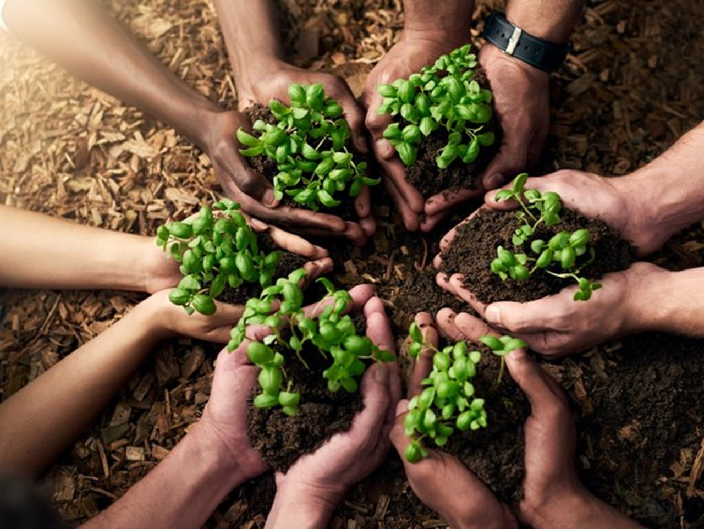
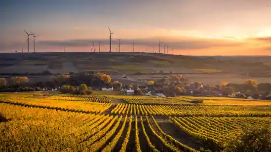
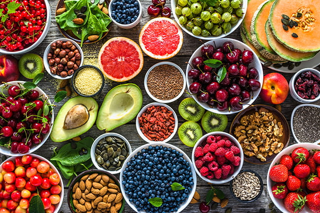
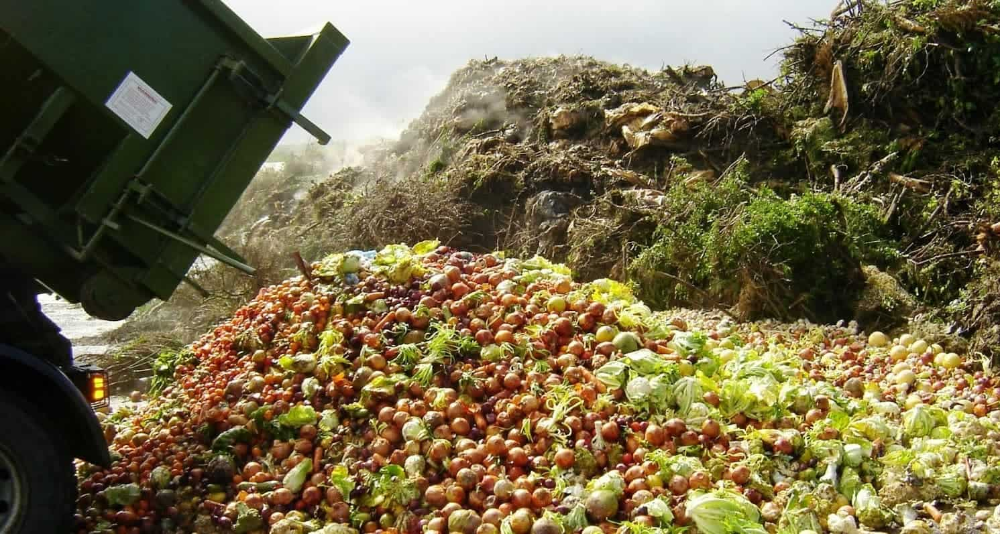

Zero Hunger
Home
Gallery
Shop
User Profile
Feedback
Sitemap
Team
Gallery
Food Security

Sustainable Agriculture
Rural Development

Nutrition

Food Loss and Waste

Climate Change
×
Select Background Color:
Select Font Style:
Arial
Verdana
Tahoma
Times New Roman
Courier New
Georgia
Comic Sans MS

![Addressing climate change and building resilience require coordinated action and collaboration at multiple levels, including local, national, regional, and global scales, involving governments, policymakers, businesses, civil society organizations, research institutions, and local communities. By prioritizing climate resilience and implementing effective adaptation and mitigation measures, societies can enhance their capacity to cope with climate-related challenges, protect vulnerable populations and ecosystems, and promote sustainable development pathways that ensure a more resilient and equitable future for all.](climatechange.jpeg)